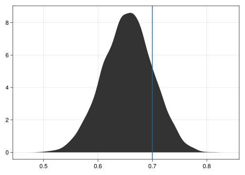

using DistributionsBayesian inference for a sequence of coinflips
About this tutorial
This is a tutorial on how to use the LogDensityProblems.jl ecosystem for Bayesian inference. Compared to other packages, such as Turing.jl, this approach is a bit more low-level, with the upside of being more hackable and being insightful for learning purposes.
Setup
For this exercise, we’re interested in performing inference on a simple data-generating process where a possibly biased coin is flipped \(N=100\) times. More formally, we could state this like so:
\[ y_i \sim \mathrm{Bernoulli}(p) \textrm{ for } i = 1,2,...,100 \]
We start by simulating data from a Bernoulli distribution with the probability of heads set to \(p = 0.7\), which for the inverse problem is going to be the unknown quantity of interest to be inferred from observed data.
N = 100
p = 0.7
d = Bernoulli(p)
data = rand(d, N);Note: The avid reader will notice that this problem could also be more efficiently represented by making use of independence between the flips, in which case we could just record the total number of flips and the number of heads and make use of the binomial distribution. However, for sake of consistency we here stick to the Bernoulli representation.
Model definition
Having simulated data for inference, we now proceed to the model definition using the LogDensityProblems interface package. We store the flips in a struct called CoinflipProblem:
struct CoinflipProblem
flips::Vector{Bool}
end;The centerpiece of most modern Bayesian inference methods is the unnormalized log probability density function of the posterior distribution, which indicates how well a given parameter value fits the evidence provided by our data (encoded in the loglikelihood function) and our prior beliefs. For our numerical estimation procedure, it guides our search of the parameter space to obtain a representative set of draws from the posterior distribution.
We start by specifying the loglikelihood function, which, for a given value \(p\), is the sum of the log probability densities of each of our flips under a \(\textrm{Bernoulli}(p)\) distribution:
function loglik(p::Real, flips::Vector{Bool})
sum(y -> logpdf(Bernoulli(p), y), flips)
end;Next to the likelihood function which makes use of the information from the data, we also need to specify a prior distribution which encodes our prior (before having seen the data) belief about \(p\). Here, we’re going to be broadly skeptical of extremely biased coins and use a \(\mathrm{Beta}(2,2)\) prior:
function logpri(p::Real)
logpdf(Beta(2,2), p)
end;Here’s a plot of what that looks like:
using CairoMakie
plot(Beta(2,2))
We now make our problem struct callable on an input parameter \(\theta\), which is just a ‘container’ holding our actual parameter of interest, \(p\), but could also contain other parameters. Calling the struct on a given \(\theta\) returns the sum of the log density of the prior and the log likelihood, a.k.a. the log posterior density evaluated at \(p\).
function (problem::CoinflipProblem)(θ)
(; flips) = problem
(; p) = θ
logpri(p) + loglik(p, flips)
end We can instantiate our CoinflipProblem with the data and call it to evaluate the log posterior density at a couple of values for \(p\):
problem = CoinflipProblem(data)
problem((; p=0.1)), problem((; p=0.5)), problem((; p=0.9))(-171.54963185075027, -68.90925294788643, -70.47730129328443)While the actual values of the log posterior density are not immediately that useful, we can already infer that, given the data and our prior beliefs, \(p=0.5\) is deemed similarly likely compared to \(p=0.9\) and much more likely than \(p=0.1\).
Model estimation
Having defined a way to evaluate the posterior density for a given parameter value, we now want a full representation of the posterior distribution to draw conclusions about the coin. While for simple problems, like the one presented here, a closed-form analytical solution is available, a more general method which also works for complicated models is to draw a large number of samples from the posterior distribution. Based on these samples, one can easily derive statements about certain summaries of the posterior distribution (e.g., its mean and standard deviation) or visualize it.
A general purpose numerical procedure for obtaining samples from the posterior distribution, using the unnormalized log posterior density function (as specified above) and its gradient, is Hamiltonian Monte Carlo (HMC) and its variants.
As more of an implementation detail, HMC operates on the unconstrained reals but our parameter \(p\) is confined to the unit interval \((0,1)\) so we need an appropriate transformation, which is conveniently available in the TransformedLogDensities package. As mentioned, HMC furthermore requires the gradient of the posterior density, which we can conveniently obtain via automatic differentiation, in this case using the ForwardDiff package.
using LogDensityProblems
using TransformVariables, TransformedLogDensities
using LogDensityProblemsAD, ForwardDiff
transformation = as((p=as_unit_interval,))
tran = TransformedLogDensity(transformation, problem)
grad = ADgradient(:ForwardDiff, tran)ForwardDiff AD wrapper for TransformedLogDensity of dimension 1, w/ chunk size 1We can now evaluate the logdensity and its gradient:
LogDensityProblems.logdensity_and_gradient(grad, zeros(1))(-70.29554730900632, [23.0])With this in place, we can now draw a large number of samples (say, \(S=2000\)) from the posterior distribution using the HMC implementation in DynamicHMC. We use the ThreadsX package to sample \(k\) chains in parallel:
using Random
using DynamicHMC
using ThreadsX
function sample(grad, S, k; rng=Random.default_rng())
ThreadsX.map(1:k) do _
mcmc_with_warmup(rng, grad, S; reporter=NoProgressReport())
end
end
result = sample(grad, 2000, 4)4-element Vector{NamedTuple{(:posterior_matrix, :tree_statistics, :κ, :ϵ), Tuple{Matrix{Float64}, Vector{DynamicHMC.TreeStatisticsNUTS}, GaussianKineticEnergy{LinearAlgebra.Diagonal{Float64, Vector{Float64}}, LinearAlgebra.Diagonal{Float64, Vector{Float64}}}, Float64}}}:
(posterior_matrix = [1.0058940995780696 1.0605630001032291 … 1.324558672493981 1.1884766295323521], tree_statistics = [DynamicHMC.TreeStatisticsNUTS(-60.39014100493384, 2, turning at positions 0:3, 0.910988062043864, 3, DynamicHMC.Directions(0xd9111d8b)), DynamicHMC.TreeStatisticsNUTS(-60.074474827326554, 2, turning at positions 0:3, 0.9539617157746445, 3, DynamicHMC.Directions(0xd0c40807)), DynamicHMC.TreeStatisticsNUTS(-60.89710601788657, 1, turning at positions 1:2, 0.8283087846124366, 3, DynamicHMC.Directions(0xeab21336)), DynamicHMC.TreeStatisticsNUTS(-64.8266259972107, 2, turning at positions -2:1, 0.5324468251200921, 3, DynamicHMC.Directions(0x379fcfd5)), DynamicHMC.TreeStatisticsNUTS(-63.365031302412476, 1, turning at positions -1:0, 0.9351010505904543, 1, DynamicHMC.Directions(0x80333792)), DynamicHMC.TreeStatisticsNUTS(-62.15526687733028, 1, turning at positions -2:-3, 0.9999999999999999, 3, DynamicHMC.Directions(0xad89e82c)), DynamicHMC.TreeStatisticsNUTS(-60.98864166881967, 1, turning at positions 0:1, 0.8264712688343019, 1, DynamicHMC.Directions(0x2287f241)), DynamicHMC.TreeStatisticsNUTS(-60.7189886382524, 2, turning at positions -2:1, 0.9999999999999999, 3, DynamicHMC.Directions(0x57a684b5)), DynamicHMC.TreeStatisticsNUTS(-61.186740105501904, 1, turning at positions 0:1, 0.7083416553312581, 1, DynamicHMC.Directions(0xcdbf96c9)), DynamicHMC.TreeStatisticsNUTS(-61.2845266262707, 1, turning at positions 0:1, 1.0, 1, DynamicHMC.Directions(0xcf6c1339)) … DynamicHMC.TreeStatisticsNUTS(-61.00321115408256, 2, turning at positions -2:1, 0.9943797310263487, 3, DynamicHMC.Directions(0x0dbabc6d)), DynamicHMC.TreeStatisticsNUTS(-61.047888656611754, 1, turning at positions -1:-2, 0.7326699634540859, 3, DynamicHMC.Directions(0xbe2650ad)), DynamicHMC.TreeStatisticsNUTS(-64.45222688267648, 1, turning at positions 0:1, 0.3112007310233998, 1, DynamicHMC.Directions(0x6991ce45)), DynamicHMC.TreeStatisticsNUTS(-63.32537118182135, 1, turning at positions 0:1, 1.0, 1, DynamicHMC.Directions(0x9a3e5aff)), DynamicHMC.TreeStatisticsNUTS(-60.8088562509901, 2, turning at positions -1:2, 0.9999999999999999, 3, DynamicHMC.Directions(0xc37cfcda)), DynamicHMC.TreeStatisticsNUTS(-61.72423897728738, 1, turning at positions 1:2, 0.6753774263783744, 3, DynamicHMC.Directions(0x944c7baa)), DynamicHMC.TreeStatisticsNUTS(-60.31076701652606, 2, turning at positions -1:2, 0.9950350863840173, 3, DynamicHMC.Directions(0x1064eaee)), DynamicHMC.TreeStatisticsNUTS(-60.280276380924505, 1, turning at positions 0:1, 1.0, 1, DynamicHMC.Directions(0x7f7d7717)), DynamicHMC.TreeStatisticsNUTS(-61.14739805160589, 1, turning at positions 0:1, 0.7680370952414641, 1, DynamicHMC.Directions(0x64b07d03)), DynamicHMC.TreeStatisticsNUTS(-60.975435178921074, 2, turning at positions -2:1, 0.9999999999999999, 3, DynamicHMC.Directions(0xc9afa82d))], κ = Gaussian kinetic energy (Diagonal), √diag(M⁻¹): [0.20892271624687506], ϵ = 1.1411133715429909)
(posterior_matrix = [1.0727989942951228 0.8119528888152521 … 0.79908682835979 1.145090046107464], tree_statistics = [DynamicHMC.TreeStatisticsNUTS(-60.08969967838724, 1, turning at positions 1:2, 0.9550710000631782, 3, DynamicHMC.Directions(0xe3fdcc32)), DynamicHMC.TreeStatisticsNUTS(-60.33438721213265, 1, turning at positions -1:-2, 0.9526179012068448, 3, DynamicHMC.Directions(0x7a9d7689)), DynamicHMC.TreeStatisticsNUTS(-60.1715475879722, 2, turning at positions -1:2, 0.9724428142580819, 3, DynamicHMC.Directions(0xb1a919f2)), DynamicHMC.TreeStatisticsNUTS(-59.82026160690279, 1, turning at positions 0:1, 1.0, 1, DynamicHMC.Directions(0xaabc9baf)), DynamicHMC.TreeStatisticsNUTS(-61.73936489907677, 2, turning at positions 0:3, 0.7580581009786758, 3, DynamicHMC.Directions(0xd0d13d77)), DynamicHMC.TreeStatisticsNUTS(-60.8676308181903, 1, turning at positions 0:1, 1.0, 1, DynamicHMC.Directions(0xe2ae375d)), DynamicHMC.TreeStatisticsNUTS(-62.876377035941815, 1, turning at positions -1:-2, 0.6828729299052569, 3, DynamicHMC.Directions(0x7580a1f9)), DynamicHMC.TreeStatisticsNUTS(-61.49700608189974, 1, turning at positions 0:1, 0.7452739995541132, 1, DynamicHMC.Directions(0x606ba1ab)), DynamicHMC.TreeStatisticsNUTS(-62.09989115596749, 2, turning at positions -2:1, 0.9092315215293502, 3, DynamicHMC.Directions(0xd3eee089)), DynamicHMC.TreeStatisticsNUTS(-59.788980535794785, 1, turning at positions -2:-3, 0.9999999999999999, 3, DynamicHMC.Directions(0x42e7b9e0)) … DynamicHMC.TreeStatisticsNUTS(-61.17718618474947, 1, turning at positions -1:-2, 0.8026263013117916, 3, DynamicHMC.Directions(0x228645c1)), DynamicHMC.TreeStatisticsNUTS(-60.925086694731476, 2, turning at positions -2:1, 0.9999999999999999, 3, DynamicHMC.Directions(0xe1cd431d)), DynamicHMC.TreeStatisticsNUTS(-59.8291123709329, 2, turning at positions 0:3, 0.9925449407500818, 3, DynamicHMC.Directions(0x3389b7eb)), DynamicHMC.TreeStatisticsNUTS(-59.91067528787149, 1, turning at positions 1:2, 0.977774157007917, 3, DynamicHMC.Directions(0x466184ee)), DynamicHMC.TreeStatisticsNUTS(-59.833820533481365, 1, turning at positions 2:3, 0.9999999999999999, 3, DynamicHMC.Directions(0xe7661eeb)), DynamicHMC.TreeStatisticsNUTS(-60.19603740968348, 2, turning at positions 0:3, 0.9427396847040601, 3, DynamicHMC.Directions(0x6268e46b)), DynamicHMC.TreeStatisticsNUTS(-60.1491868678926, 1, turning at positions -1:0, 1.0, 1, DynamicHMC.Directions(0x7cd311e2)), DynamicHMC.TreeStatisticsNUTS(-60.78554403869777, 2, turning at positions -2:1, 0.9048927860167173, 3, DynamicHMC.Directions(0xd8d596a1)), DynamicHMC.TreeStatisticsNUTS(-60.68190243497294, 2, turning at positions 0:3, 0.9091906066477812, 3, DynamicHMC.Directions(0xf327c7ff)), DynamicHMC.TreeStatisticsNUTS(-60.802989891345995, 1, turning at positions 1:2, 0.8967900773259979, 3, DynamicHMC.Directions(0xa3fe8a22))], κ = Gaussian kinetic energy (Diagonal), √diag(M⁻¹): [0.22867098010810216], ϵ = 0.9616116131710419)
(posterior_matrix = [0.9825714471634304 0.9660592973663192 … 1.049439559959976 1.0664098504698984], tree_statistics = [DynamicHMC.TreeStatisticsNUTS(-59.86950379409712, 2, turning at positions 0:3, 0.9821743734991469, 3, DynamicHMC.Directions(0x04294b57)), DynamicHMC.TreeStatisticsNUTS(-60.350702558010035, 2, turning at positions 0:3, 0.9093688311452613, 3, DynamicHMC.Directions(0xb67758ef)), DynamicHMC.TreeStatisticsNUTS(-60.10015446478, 2, turning at positions 0:3, 0.9541728156974032, 3, DynamicHMC.Directions(0xdc737477)), DynamicHMC.TreeStatisticsNUTS(-60.70160044312167, 1, turning at positions 1:2, 0.8927288964840648, 3, DynamicHMC.Directions(0x19219e02)), DynamicHMC.TreeStatisticsNUTS(-60.58155292812043, 1, turning at positions -1:0, 1.0, 1, DynamicHMC.Directions(0x363c6e52)), DynamicHMC.TreeStatisticsNUTS(-60.33294601338947, 1, turning at positions 0:1, 0.9689293554448278, 1, DynamicHMC.Directions(0x6ab23c8d)), DynamicHMC.TreeStatisticsNUTS(-61.199231371924256, 2, turning at positions 0:3, 0.8979441260214336, 3, DynamicHMC.Directions(0xb4fe3513)), DynamicHMC.TreeStatisticsNUTS(-61.79718062459656, 2, turning at positions 0:3, 0.7288270730495577, 3, DynamicHMC.Directions(0xd6e20047)), DynamicHMC.TreeStatisticsNUTS(-60.05845620645043, 1, turning at positions 2:3, 0.9987579663974852, 3, DynamicHMC.Directions(0x1863b79f)), DynamicHMC.TreeStatisticsNUTS(-60.168099440057524, 2, turning at positions 0:3, 0.953297948697112, 3, DynamicHMC.Directions(0x6198ee47)) … DynamicHMC.TreeStatisticsNUTS(-59.914162563504576, 1, turning at positions -1:0, 1.0, 1, DynamicHMC.Directions(0xa1bf7516)), DynamicHMC.TreeStatisticsNUTS(-60.733017478605426, 2, turning at positions 0:3, 0.8666746419531125, 3, DynamicHMC.Directions(0xab881503)), DynamicHMC.TreeStatisticsNUTS(-62.20523522219133, 1, turning at positions -1:-2, 0.5511972372395637, 3, DynamicHMC.Directions(0x4b1708d9)), DynamicHMC.TreeStatisticsNUTS(-60.546748532682265, 1, turning at positions -1:0, 0.9225157589157382, 1, DynamicHMC.Directions(0x03b2b2b4)), DynamicHMC.TreeStatisticsNUTS(-62.5399485754696, 2, turning at positions -2:1, 0.8203085852951834, 3, DynamicHMC.Directions(0xbd3ffc29)), DynamicHMC.TreeStatisticsNUTS(-62.03560488153044, 2, turning at positions -1:2, 0.9999999999999999, 3, DynamicHMC.Directions(0x1e6bcdee)), DynamicHMC.TreeStatisticsNUTS(-62.376984567973054, 1, turning at positions -1:0, 0.6170848930876548, 1, DynamicHMC.Directions(0x65c425a2)), DynamicHMC.TreeStatisticsNUTS(-61.976449516622, 2, turning at positions -1:2, 0.9999999999999999, 3, DynamicHMC.Directions(0xff11559e)), DynamicHMC.TreeStatisticsNUTS(-59.98995546133357, 1, turning at positions 0:1, 1.0, 1, DynamicHMC.Directions(0x9ce8e01b)), DynamicHMC.TreeStatisticsNUTS(-59.91852529573208, 2, turning at positions -1:2, 0.9968995037839125, 3, DynamicHMC.Directions(0xc9b32d46))], κ = Gaussian kinetic energy (Diagonal), √diag(M⁻¹): [0.20161543408220398], ϵ = 1.1129093597211068)
(posterior_matrix = [0.5446751487088308 0.47595745309505827 … 1.2177538893936102 1.0845875208159415], tree_statistics = [DynamicHMC.TreeStatisticsNUTS(-62.078930987611365, 2, turning at positions -2:1, 0.9999999999999999, 3, DynamicHMC.Directions(0x0079d62d)), DynamicHMC.TreeStatisticsNUTS(-62.53871102728392, 1, turning at positions 0:1, 0.8463528017943344, 1, DynamicHMC.Directions(0xac184d15)), DynamicHMC.TreeStatisticsNUTS(-62.984824969986164, 1, turning at positions 0:1, 0.9578594383350257, 1, DynamicHMC.Directions(0x3f97355b)), DynamicHMC.TreeStatisticsNUTS(-62.967451406638276, 1, turning at positions -2:-3, 0.9366488148091735, 3, DynamicHMC.Directions(0xe094b71c)), DynamicHMC.TreeStatisticsNUTS(-59.84587330199332, 1, turning at positions -1:-2, 0.9883861994712538, 3, DynamicHMC.Directions(0xf2d63ca9)), DynamicHMC.TreeStatisticsNUTS(-59.860492059994236, 2, turning at positions -1:2, 0.9945446217174254, 3, DynamicHMC.Directions(0x4daac392)), DynamicHMC.TreeStatisticsNUTS(-59.97874511035256, 2, turning at positions 5:6, 0.9740976317272955, 7, DynamicHMC.Directions(0xcad4c916)), DynamicHMC.TreeStatisticsNUTS(-60.11178392593013, 2, turning at positions 5:6, 0.9710105727920981, 7, DynamicHMC.Directions(0x6e5b0f6e)), DynamicHMC.TreeStatisticsNUTS(-60.53453681477102, 1, turning at positions -1:0, 0.9103845892446467, 1, DynamicHMC.Directions(0xffbc5c80)), DynamicHMC.TreeStatisticsNUTS(-60.46537246703829, 1, turning at positions -1:0, 1.0, 1, DynamicHMC.Directions(0x5b37ec36)) … DynamicHMC.TreeStatisticsNUTS(-60.321758673442794, 1, turning at positions -1:0, 0.9190423635138688, 1, DynamicHMC.Directions(0xca1bb21e)), DynamicHMC.TreeStatisticsNUTS(-60.27559247253089, 1, turning at positions -2:-3, 0.996401182474261, 3, DynamicHMC.Directions(0xf1e3a5a0)), DynamicHMC.TreeStatisticsNUTS(-62.05413826931228, 2, turning at positions -3:0, 0.7173369273952792, 3, DynamicHMC.Directions(0xf6e63dfc)), DynamicHMC.TreeStatisticsNUTS(-60.50542723229151, 1, turning at positions 2:3, 0.9892675838648665, 3, DynamicHMC.Directions(0x614aa61b)), DynamicHMC.TreeStatisticsNUTS(-60.60064377801833, 2, turning at positions -3:0, 0.9183252504264824, 3, DynamicHMC.Directions(0xef865bac)), DynamicHMC.TreeStatisticsNUTS(-60.19434665190732, 1, turning at positions -2:-3, 0.9732944596878762, 3, DynamicHMC.Directions(0x0f91d030)), DynamicHMC.TreeStatisticsNUTS(-60.00172987397604, 2, turning at positions 0:3, 0.9747810925179953, 3, DynamicHMC.Directions(0x5bff1e6f)), DynamicHMC.TreeStatisticsNUTS(-59.97334674040486, 1, turning at positions 1:2, 0.9869947520622174, 3, DynamicHMC.Directions(0xb1aaf11e)), DynamicHMC.TreeStatisticsNUTS(-60.62668539044079, 1, turning at positions -1:-2, 0.8772252974382639, 3, DynamicHMC.Directions(0xe7995169)), DynamicHMC.TreeStatisticsNUTS(-60.711002299455124, 2, turning at positions -1:2, 0.9800512439519286, 3, DynamicHMC.Directions(0x3aecea42))], κ = Gaussian kinetic energy (Diagonal), √diag(M⁻¹): [0.20629709778957428], ϵ = 0.9671849948793995)The result is a vector of length \(k\), each element of which contains for each chain the posterior samples as well as some statistics about the sampling procedure, which can be used to check if everything went as planned.
Model checking
Having obtained samples from the posterior distribution, we’re in principle ready to use our model for inference, i.e., answer the question of whether our coin is biased and by how much, and how certain we can be of the answer based on the data we have seen.
However, before we jump to inference, it is good practice to perform some model checks: Our estimates rely on a numerical sampling scheme, which can fail, rendering the results unreliable.
using MCMCDiagnosticTools
using DynamicHMC.DiagnosticsFirst, we can check the effective sample size (ess). In Markov chain monte carlo (MCMC) approaches, samples are often correlated, meaning that the total number of ‘effective’ samples is less than obtained by an uncorrelated sampling procedure because consecutive samples carry some of the same information.
ess, Rhat = ess_rhat(stack_posterior_matrices(result))([2821.153267550686], [1.0009676808218122])summarize_tree_statistics.(getfield.(result, :tree_statistics))4-element Vector{DynamicHMC.Diagnostics.TreeStatisticsSummary{Float64, NamedTuple{(:max_depth, :divergence, :turning), Tuple{Int64, Int64, Int64}}}}:
Hamiltonian Monte Carlo sample of length 2000
acceptance rate mean: 0.91, 5/25/50/75/95%: 0.64 0.86 0.97 1.0 1.0
termination: divergence => 0%, max_depth => 0%, turning => 100%
depth: 0 => 0%, 1 => 62%, 2 => 38%
Hamiltonian Monte Carlo sample of length 2000
acceptance rate mean: 0.92, 5/25/50/75/95%: 0.65 0.88 0.97 1.0 1.0
termination: divergence => 0%, max_depth => 0%, turning => 100%
depth: 0 => 0%, 1 => 65%, 2 => 35%
Hamiltonian Monte Carlo sample of length 2000
acceptance rate mean: 0.92, 5/25/50/75/95%: 0.68 0.89 0.97 1.0 1.0
termination: divergence => 0%, max_depth => 0%, turning => 100%
depth: 0 => 0%, 1 => 65%, 2 => 35%
Hamiltonian Monte Carlo sample of length 2000
acceptance rate mean: 0.94, 5/25/50/75/95%: 0.74 0.91 0.97 1.0 1.0
termination: divergence => 0%, max_depth => 0%, turning => 100%
depth: 0 => 0%, 1 => 59%, 2 => 41%Model inference
using StructArrays
function posterior(result)
samples = eachcol(pool_posterior_matrices(result))
StructArray(transform.(transformation, samples))
end
post = posterior(result);function summarize(post)
m, s = round.((mean(post.p), std(post.p)); digits=2)
println("posterior mean: ", m)
println("posterior sd: ", s)
end
summarize(post)posterior mean: 0.72
posterior sd: 0.04function plot_inferred_vs_true(post, p_true)
fig = Figure(); ax = Axis(fig[1,1])
density!(ax, post.p; color=:grey20)
vlines!(ax, p_true; linewidth=2)
fig
end
plot_inferred_vs_true(post, p)